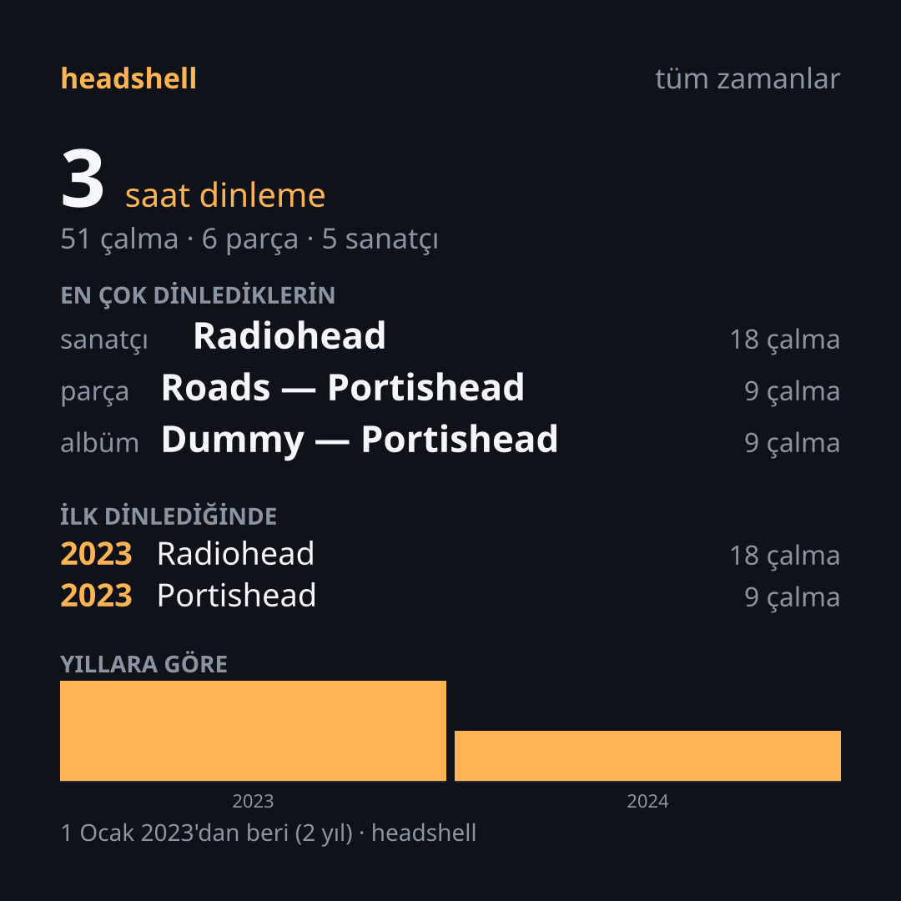

On yıllık müzik hafızanız.
Yeniden size ait.
Abonelikler biter. Şirketler değişir. Fakat 10 yıl boyunca biriktirdiğiniz dinleme kimliği yalnızca size ait olmalıdır. headshell, bu mülkiyeti geri vermek için tasarlandı.
Müzik dinleme kimliği, sesten bağımsızdır.
Müziğin nereden geldiği değişir — ister kendi yerel FLAC arşiviniz, ister evinizdeki Navidrome veya Jellyfin sunucunuz olsun. Üstteki dinleme geçmişiniz, çalma listeleriniz ve istatistikleriniz asla bir şirketin şartlarına kilitlenmemelidir.
Spotify'daki geçmişinizi yasal GDPR hakkınızla kurtarır, şarkıları evrensel MusicBrainz ve ISRC standartlarına bağlar ve kendi yerel SQLite veritabanınızda ömür boyu korur.

Geleneksel Servisler vs. headshell
Müzik dinleyicisine sunulan iki farklı dünya.
Spotify / Apple Music
- Dinleme geçmişiniz platformun sunucusunda rehindir; abonelik bittiğinde kaybolur.
- Yıl sonu özetleri (Spotify Wrapped®) yılda sadece bir kez ve yalnızca son 12 ay için sunulur.
- Yalnızca platformun izin verdiği DRM korumalı katalog dinlenebilir.
- Dinleme verileriniz reklam ve kullanıcı profilleme için işlenir.
- Şirket sözleşmeyi değiştirdiğinde tüm harici araçlar çalışmayı durdurur.
headshell
- Veri tamamen sizin bilgisayarınızdaki SQLite veritabanındadır; ömür boyu silinmez.
- İstediğiniz an, 5 yıllık veya 10 yıllık sınırsız Sleeve kartları üretilir.
- Kendi yerel FLAC/MP3 arşiviniz ve Subsonic/Jellyfin sunucunuz tek elde birleşir.
- Sıfır telemetri, sıfır gözetim. %100 çevrimdışı çalışabilirlik.
- Kanonik kimlikler (ISRC / MBID) sayesinde hiçbir platforma bağımlı kalmaz.
Tavizsiz Mimari
Kullanıcı haklarını ve donanım performansını merkeze alan mühendislik.
Yasal Veri Taşınabilirliği
API şartlarına bağımlı kalmadan, Avrupa Birliği GDPR hakkınızla aldığınız 10 yıllık akış zip dosyasını yerel olarak içe aktarır.
Evrensel Kimlik Standartları
Parçaları platform URI'larına değil; ISRC, MusicBrainz ID ve akustik parmak izlerine bağlar. Platformlar kapansa da veriniz korunur.
Kişisel Scrobbler
10 yıllık içe aktarılan verinizle, bugün çaldığınız şarkı aynı veritabanında buluşur. Geçmiş ve bugün tek zaman çizgisinde birleşir.
Saf Rust Performansı
Garbage collector duraklamaları olmadan sıfır takılmayla ses oynatma, düşük bellek tüketimi ve yüksek güvenlik.
Hızlı Başlangıç
4 basit adımda verinizi kurtarın ve kendi şartlarınızla dinleyin.
Spotify hesabınızdan (*Hesap → Gizlilik → Genişletilmiş akış geçmişi*) veri paketinizi isteyin.
my_spotify_data.zip
Arşivi yerel SQLite veritabanına taşıyın ve dinleme istatistiklerinizi anında görün:
headshell stats --year 2024 --top 10
Sosyal medyada paylaşmak üzere dikey veya kare formatta kartınızı oluşturun:
Yerel müzik klasörlerinizi tarayın veya Navidrome/Jellyfin sunucunuzu bağlayın:
headshell play "Radiohead" --all --tui
Sıkça Sorulan Sorular
headshell hakkında aklınıza gelebilecek tüm teknik ve pratik sorular.
Bu bir müzik korsanlığı veya MP3 indirme aracı mı?
Kesinlikle hayır. headshell bir ses sağlayıcısı değil, bağımsız bir dinleme kimliği katmanıdır. Kendi yasal müzik arşivinizi (FLAC, MP3) veya kişisel medya sunucunuzu (Navidrome, Subsonic, Jellyfin) dinlerken geçmişinizi ve istatistiklerinizi şirketlerin tekelinden kurtarır.
Spotify hesabımı kapatırsam dinleme geçmişim kaybolur mu?
Asla. headshell ile verinizi bir kez içe aktardığınız andan itibaren tüm geçmişiniz bilgisayarınızdaki SQLite veritabanında yerel olarak mühürlenir. Spotify yarın kapansa veya aboneliğinizi iptal etseniz dahi 10 yıllık müzik hafızanız sizde kalır.
Spotify şifremi veya API anahtarımı vermem gerekiyor mu?
Hayır. headshell hiçbir şirketin API'sine bağlanmaz ve şifrenizi istemez. Avrupa Birliği GDPR veri taşınabilirliği kapsamında resmi olarak indirdiğiniz veri export zip dosyasını kendi bilgisayarınızda çevrimdışı olarak okur.
Bilgisayarımdan bir müzik dosyasını silersem dinleme geçmişim silinir mi?
Hayır. headshell mimarisinde "ne dinledin" (geçmiş tablosu) ile "şu an diskte ne çalabilirsin" (katalog) tamamen ayrı tutulur. Bir dosyayı silseniz dahi o parçanın geçmişteki dinleme kayıtları, scrobble'ları ve istatistikleri kalıcıdır.
İnternet bağlantım olmadan çalışır mı?
Evet, %100 çevrimdışı çalışabilir. Veri içe aktarma, yerel kütüphane araması (SQLite FTS5), müzik çalma, terminal arayüzü ve Sleeve kartı üretimi harici hiçbir internet bağlantısına ihtiyaç duymaz.
Kişisel Navidrome veya Jellyfin sunucumu nasıl bağlarım?
headshell provider add subsonic --url https://... --user adiniz komutuyla kolayca kaydedebilirsiniz. Parolanız komut satırına yazılmaz (böylece kabuk geçmişine düşmez); istemden yankısız okunur veya token olarak diskte güvenle saklanır.
Ses kalitesi nasıl? Hi-Res ve Kayıpsız (Lossless) destekliyor mu?
headshell, saf Rust ile yazılmış symphonia çözücüsü ve cpal ses çıkış hattını kullanır. FLAC, WAV, OGG, MP3 ve M4A dosyalarını doğrudan donanımınıza saf bit akışıyla iletir; herhangi bir kalite kaybı veya sıkıştırma uygulamaz.
Etiketleri (ID3) bozuk veya eksik olan şarkılar nasıl eşleşiyor?
headshell katı bir Kanonik Kimlik Zinciri kullanır: Sırasıyla ISRC kodu, MusicBrainz ID, süre/sanatçı toleranslı bulanık eşleme ve ses parmak iziyle şarkıları çözümler. 69 farklı zorlu vaka üzerinde %98+ doğrulukla test edilmiştir.
Birlikte Dinleme (Odalar / Rooms) özelliği nasıl çalışacak?
Ses asla sunucudan röle edilmez (böylece telif riski ve sunucu masrafı oluşmaz). Odalardaki herkes müziği kendi yerel kaynağından çalar; ağ üzerinden yalnızca milisaniyelik bir zaman çapası (anchor) senkronlanır.
Modern Masaüstü Arayüzü (GUI) ve Mobil Sürüm gelecek mi?
Evet. headshell-core çekirdeği bugünden uniffi ile iOS/Android mobil bağlamalarına ve Tauri tabanlı masaüstü arayüzüne uyumlu olarak tasarlandı. Geliştiriciler ve kullanıcılar için CSS tabanlı topluluk temaları da yoldadır.